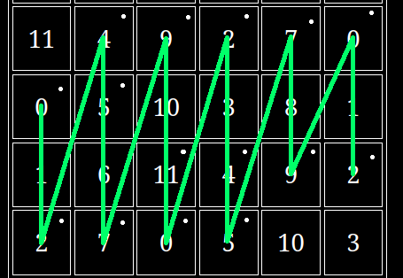
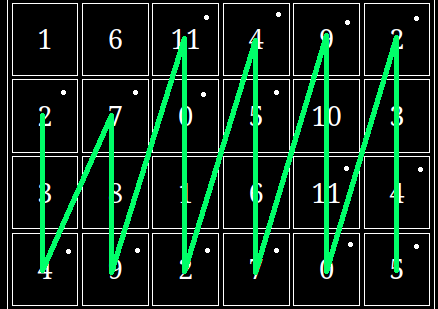
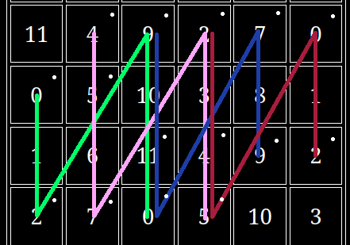
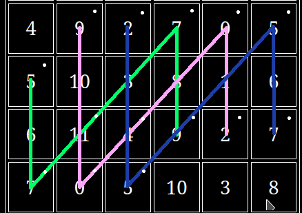

This is probably the most important article on the anchor system wiki. But it wouldn't have been possible until you understand the previous sections.
Up until now, we've been using the ai we're currently playing as a landmark to figure out other ai and using that knowledge to play the guitar. This method is a great way to become free on the guitar and to know exactly what you're playing but eventually it will plateau. This defines the generative anchor system pipeline:
figure out what ai you want to play next -> use the generative method to figure out where that ai is -> physically play the ai
This plateau limits your ability to make interesting and new chords because you have to spend time figuring out where the a.i's are located before you can start making your chords. Today we'll be looking at how to break through this.
To break through this plateau we should consider things where we've already broken through this plateau and make comparisons.
Imagine we have a keyboard that's layed out exactly how the alphabet is spelled out, so that along the keyboard we have:
a b c d e f g h i j
k l m n o p q r s t
u v w x y z
If we wanted to learn this from a generative point of view, then we could say, oh I just pressed the letter n, therefore if I move my finger three keys left I can press a k, in this way we wouldn't have to memorize the keyboard layout, but we would be slower than someone who has.
The best approach is to first learn things from a generative point of view so that we can always fall back on it if necessary and then with that ground work in place go ahead and memorize the layout.
What this means for us is that if we want to get speed gains in the anchor system we have to keep the generative method as a fallback method and try to memorize the layout itself.
We won't be able to memorize the fretboard like a keyboard, because the fretboard has different positions whereas a keyboard's position is static relative to our hands.
Through our previous discussions, we know this will differ than memorizing a keyboard layout. Our plan will be to use this new pipeline called the blind diagram pipeline:
This was intentionally left vague as players that have different experience with the blind diagram pipeline will operate in a different fashion
The easy part of the pipeline is the first stage, where you select which ai's you want to play. There is some implicit restrictions you'll be using like for example you won't be choosing fret positions which have large vertical displacement as you're restricted by your physical hand.
For the second stage of the pipeline you have to convert what you want to play into physical positions on the fretboard and execute it. When you're just starting out you'll have to look at your fretting hand and make sure it lines up, this process is something you'll want to get rid of eventually.
To start out with this pipeline print out a physical version of the static fretboard diagram, place this on a music stand. There's a practice routine that I've developed with this pipeline which I find to be very benefical and I call it fretboard destruction.
The fretboard destruction practice routine starts by choosing an ai collection (I recommend major at first), and doing the following:
Here I've started at the left most 0, and gone up in this fashion 0, 2, 4, 5, 7, 9, 11, 0, 2, 4, 5, 7, 9, 0, 2. The goal is to move from left to right and playing any note in the ai collection in increasing order. Note that I didn't play the 11 because we are keeping our hand fixed on the fretboard as we move across
After you've made it to the right side of the fretboard, we do the same thing in opposite order going back. so starting from the bottom right ai: 2 0 9 7 5 4 2 0 11 9 7 5 4 2 0. At this point you've completed one iteration fretboard destruction.
Now you should be back at the 0 on the left , so move up two frets to get to the next ai in the collection and start again a new iteration
Continue moving up the left side of the fretboard and iterating until you reach you've moved up one ocatave in total. Now while still up one octave move to the right side of the fretboard and do the same thing but moving right to left eg
But now we move in the following order from the bottom right ai: 2 0 9 7 5 4 2 0 11 9 7 5 4 2 0 and then back 0 2 4 5 7 9 11 0 2 4 5 7 9 0 2, iterate this process while moving down the right side of the fretboard until you've come back down to our original starting position.
At this point we've completed one stage of fretboard destruction, so we move onto stage two.
This diagram looks complicated than it is. We start with green, performing 0 2 9 11 0, then to pink: 4 5 7 2 4 5, red: 2 4 5 0 2, and then we do the whole thing backwards so red: 2 0 5 4 2, then blue: 9 7 0 11 9 and so on until we reach our starting position, at this point we've completed one iteration.
Now we follow the exact same process as before going up one octave and then reversing things on the way back down. After getting back to our starting position, we've completed stage two. Stage three is similar to stage two, but now our string gap has increased again, for variety we've visualized it half way through this stage
Of course we are starting with green, then pink, and blue as we move from left to right, and the opposite order when we move back.
At this point I believe you can see the pattern and so continue this to stage four and finally stage five. After completing all five stages, then the fretboard destruction is complete
The reason why this exercise is so beneficial is that it forces you to work with different string gaps under the restriction of a certain ai collection, which really forces you to use the fretboard diagram to your advantage
While this process certainly works, it's a very heavy mental exercise, and it's nice to lighten things up too.
The next type of practice I recommend is comping through the diagram, what this means is that you take a song's changes make sure you have them completely memorized. Next put the printed out fretboard digram on a music stand. If you don't know any songs yet, you can put a static backing track or a drone on in the background.
Put on a metronome at a slow tempo and construct chords from the diagram using the new pipeline, you should be at a tempo that you're comfortable enough to try new chords that you've never used before.
This type of practice is really good because you'll be creating music while also being creative in how you construct your chords.
Once you've practiced fretboard destruction and comping you'll want to slowly move away from the physical diagram. The implicit memorization of the diagram will occur as you do fretboard destruction and comping, for me, I can perform the first two stages of fretboard destruction with the major ai collection without the diagram, but sometimes I need it for the later stages.
The general process will be to implicitly memorize the diagram through these exercises.